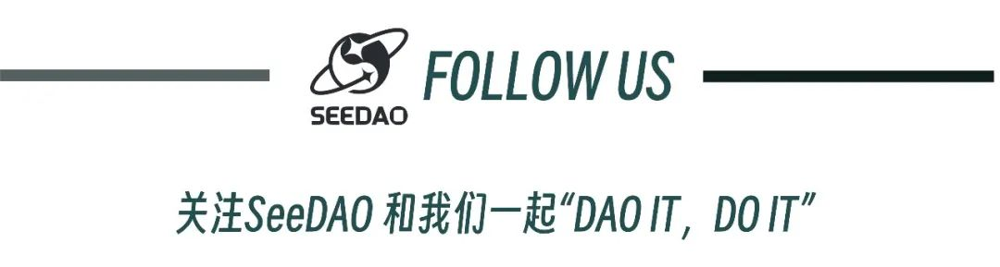

数字城邦是一个开放的社区，每个人都可以在这里畅所欲言，分享自己的想法和创意，与其他人进行交流和合作。在数字城邦里，任何人都可以获得公正的待遇，无论他们的身份、性别、种族或其他任何属性。我们相信，通过数字技术和去中心化的组织方式，我们可以建立一个更加公正、开放和高效的社会，通过共同合作和利用我们集体的专业知识和资源，让每个人都可以发挥自己的潜力，创造自己的价值。而建立一张能够有效触及的全球网络对于实现这一愿景至关重要。
SeeDAO
在今年第一季度，我们发起了实验期城市联络人计划，我们在伦敦、新加坡、纽约、迪拜、墨尔本、香港、上海、北京、旧金山和曼谷这10座不同城市招募到10位城市联络人，在10座城市开展了不同主题的分享活动。在旧金山，我们邀请到了艺术策展人龙星如、科幻作家陈楸帆，以及Google AI和Open AI的研究员等一同探讨AI与人本主义的黄昏；在伦敦，我们汇聚了来自Web3领域的专家和创业者，与现场100多位观众共同探讨Web3的发展和英国华人在该领域的影响力；在曼谷，我们开展了一场针对数字游民生活方式的分享与讨论……
与此同时，今年SeeDAO也正在以惊人的速度在不断成长。2月孵化器工作坊S2“在SeeDAO游戏人生”共有29支队伍参加；3月我们发布了新logo寓意“连接世界，游牧阴阳”，并在4月香港的社区大会上发布了新的官网操作系统，也实现了社区众多成员的第一次线下大规模面基；4月我们还与.bit联合主办了DAO Hongkong活动，这是目前华语机构举办的最具影响力的DAO大会；近期，我们的新手营第二期已经开营；5月，我们与Buidler DAO和Mask Network联合举办DAO黑山Conference，邀请到了顶流的重磅嘉宾与我们一起探讨全球危机下的组织挑战。我们始终保持着热忱与对未来趋势的敏感，摸索却又坚定地前行，我们想做那个传递信息火把的人，通过SeeDAO平台传递信息的火种。
城市联络人项目的初衷，便是延伸这张网络，让更多人加入。通过一个人，连接一群人，进而点亮全球地图。
然而在实验期，我们发现不同城市的资源禀赋不同，包括Web3的产业和社区基础、用户的关注度，以及城市联络人的背景都不相同，因此活动的效果也各有千秋。一把尺子度量不一定是最好的方式。于是在实验期结束之后，我们进行了一段时间的思考，如何更好地以DAO的形式去更好构建这张全球网络。我们似乎也渐渐有了答案。
DAO，因地制宜，分级而治。
第一期我们将SeeDAO所有活动发生的城市分为两级：Key City与Lite City。Key City为伦敦、纽约、新加坡、香港和墨尔本，设置城市联络人。其余想要使用SeeDAO品牌发起线下活动，且得到批准的城市为Lite City。
Key City 城市联络人
在Key City，设置城市联络人，着重打造SeeDAO本地品牌影响力。城市联络人将有充分的自主权，并获得SeeDAO的资源支持去进行本地合作拓展。通常每座城市只有1位城市联络人。
第一期我们将在实验期10座城市的基础上选择5座核心城市，深化本地发展，并邀请实验期的城市联络人继续与我们共同挖掘本地的合作与增长机会。他们分别是：
伦敦：Jason
新加坡：Tony
墨尔本：Vincent
香港：Sophie
纽约：Saku
由于Key City的经费更为充足，城市联络人所在城市可以探索举办更有影响力的活动，成为 “SeeDAO 全球网络” 的黄埔军校。但是城市联络人的个性化项目只会支持办一期，如果效果好，就作为独立项目，个人自己发起 P2/P3 提案，以获得更多社区支持。
Lite City 线下活动SOP
除了5座核心城市之外，其余的城市为Lite City，让社区MOD和积极贡献者可以P1提案形式更便捷地发起SeeDAO线下活动。今年SeeDAO积累了大量不同规格的活动经验，我们也更相信在后疫情时代线下社交的价值。为此，我们也鼓励社区成员可以自发开展SeeDAO的线下活动，进行主题分享或者线下社交。
Lite City的活动发起需要参照See U IRL 活动申请SOP：
https://www.notion.so/seedao/See-U-IRL-SOP-40340d67dd8046a680aca7d212c217fa。
活动申请通过后，城市联络人项目组将会辅助活动发起人开展活动。
这一季我们会更加注重标准的打磨，在一些城市继续试点推行SOP，进而以更为成熟的模式在全球范围内进一步推广，从而可以连接更多人加入我们的全球网络，成为SeeDAO数字城邦的一员。
如果你也对这个愿景充满热情，欢迎加入我们的行列，让我们一起打造这个对每个人都开放、包容和赋权的数字城邦的美好未来。
排版：子鱼
审核：Ines
